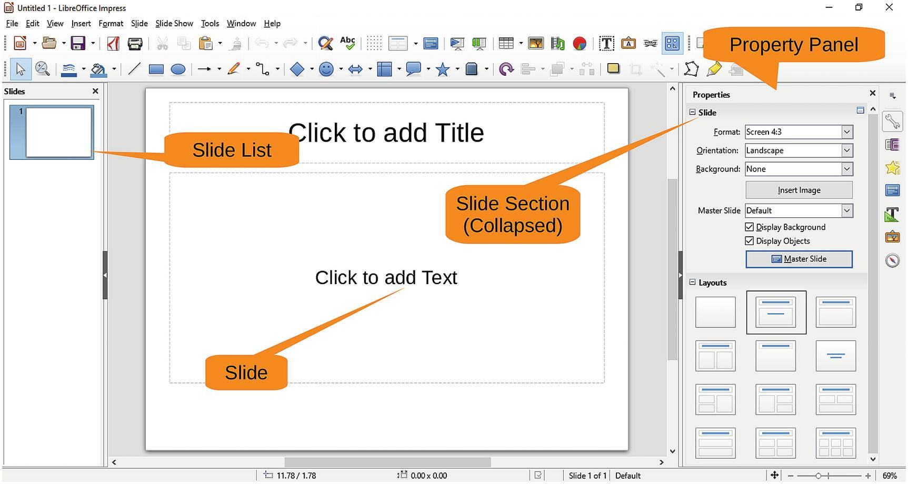
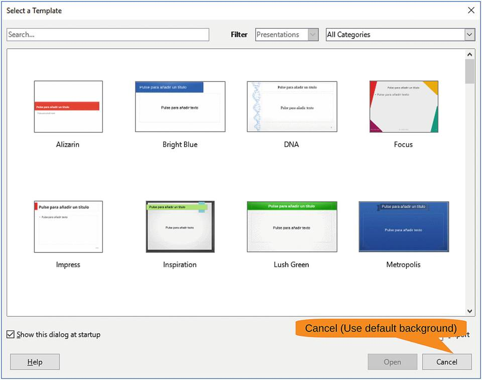
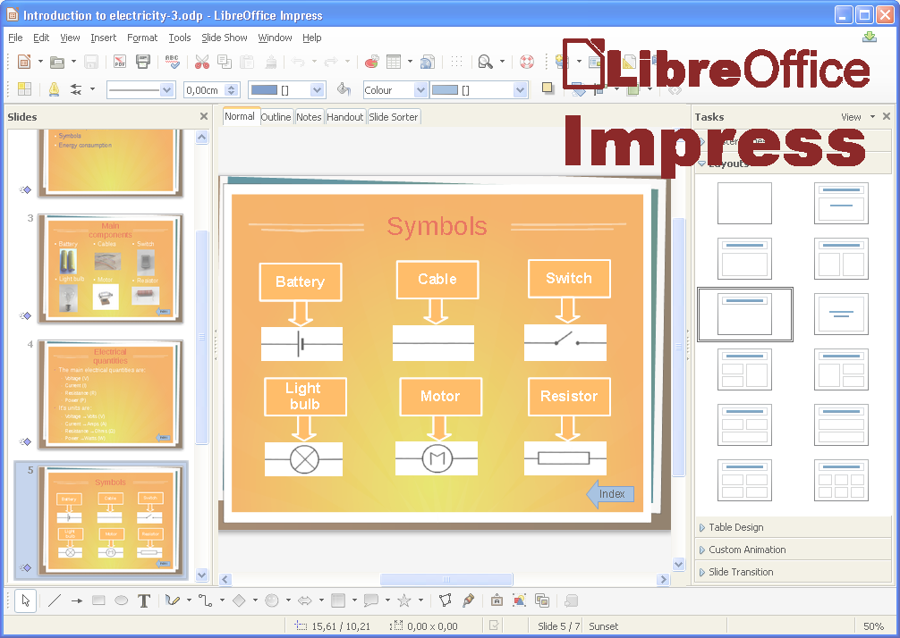

Præsentation
'Præsentation' er et program der tilbydes i Libraoffice-pakken.
'Præsentation' er et program, der kan benyttes til at lave fremlæggelser.
Dette program er dermed nyttigt hvis du skal videre formidle viden.
Her ses hvor simpelt og overskueligt bygget op:

Og hvordan man nemt kan vælge tema:

Et eksempel på hvordan programmet kan benyttes.

Klik her, hvis du ønsker mere information om de funktioner og muligheder 'Ord' kan give netop dig.
Download
For at downlode 'Præsentation' skal du blot trykke på logo'et nedenfor.
|
|
Hvis i har spørgsmål eller oplever problemmer er i velkommen til kontakte os på følgende oplysninger
| Email: |
Libraoffice@gmail.com |
| Telefon nummer: |
+45 54 53 63 01 |